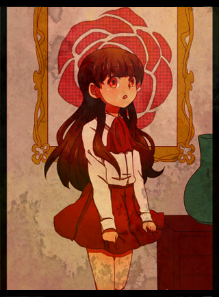

 |
...--Ib Ib (pronounced "Eeb") is the silent protagonist of the horror game Ib and the first controllable character in the game. She, along with Garry and Mary (v1.04), is one of the few characters that the player can control.
She is a short, 9 year old girl, with dark hair, red eyes, and wears a white long-sleeved shirt adorned with a red bow, that is similar to Mary's neckerchief, matching her skirt. She also wears black knee-high socks and red shoes. Her attire is very similar to a school uniform.
Ib's personality varies depending on the player's choices. In other words, Ib's personality is unknown, because it is built up by the player. The player's choices of her personality affect the game's ending (ex. The choices the player makes affect the way Ib talks to Garry or Mary). However, Ib is shown as extremely brave, quiet, nice, kind and profined. She is also very sensitive to others as she felt sorry for Mary when she had to leave her behind. Unlike Garry, she doesn't express or show her feelings too much. She appears to be a very blunt and sarcastic child as well.
Ib picks her rose after she goes into the Fabricated World. After she picks it, it will have only 3 petals left and after reviving it, an inscription THIEF will appear on the floor printed with red paint/blood. Her rose is red and is symbolic for love. Her rose has only 5 petals. Also, it is possible that Ib's rose is colored red due to her personality. Red describes her kindness, energetic spirit (that children usually have), braveness, liveliness and strong mental rank.
She visits Guertena's museum with her parents. Her mother gives her permission to look at the art on her own, and Ib goes on to explore the museum by herself. Eventually, she is transported to the Fabricated World. After exploring a while, she eventually finds a red rose. The rose is linked to her life, and if it dies, so does she. She doesn't understand this however, because she can't read the sign next to the rose.
|